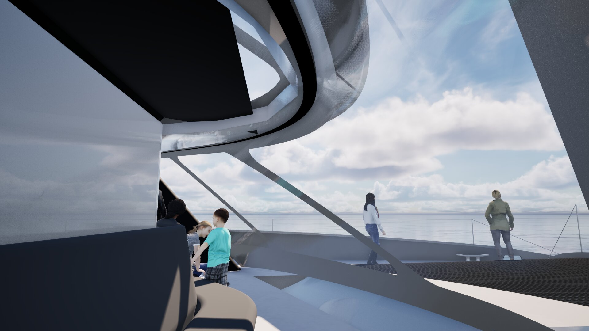
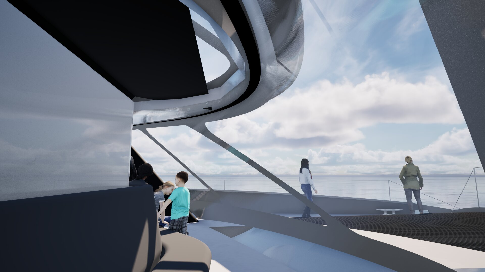

Tenerife - La Gomera
Un catamaran hybride de 24 m, 120 passagers, dans un corridor à haute biodiversité.
InSail.One - Spécifications Techniques
üìè Dimensions
Longueur: 24 m
Largeur: 11,5 m
Tirant d'eau: 1,8 m
Déplacement: 38 tonnes
Capacité: 120 passagers
⚡ Propulsion
Voiles: 2 × WISAMO 170m²
Surface totale: 340 m²
Moteurs: 2 × 260 kW élec.
Vitesse: 12 nœuds
üîã √ânergie
Batteries: 520 kWh LiFePO4
Solaire: 150 m² (72 kWc)
Production: 180 kWh/voyage
Autonomie: 100% électrique
üë• Capacit√©s
Passagers: 120 personnes
Équipage: 4 membres
Cabines: 8 (2-4 pers.)
Confort: Salons climatisés
üß≠ Performance
Navigation: 80% sous voile
Route: Tenerife - La Gomera
Distance: 28 km (2h30)
Fréquence: 4 traversées/jour
üå± Impact
99% réduction CO₂
92% réduction bruit
1 100 t CO₂ évitées/an
≈ 600 voitures × 15 000 km


 
